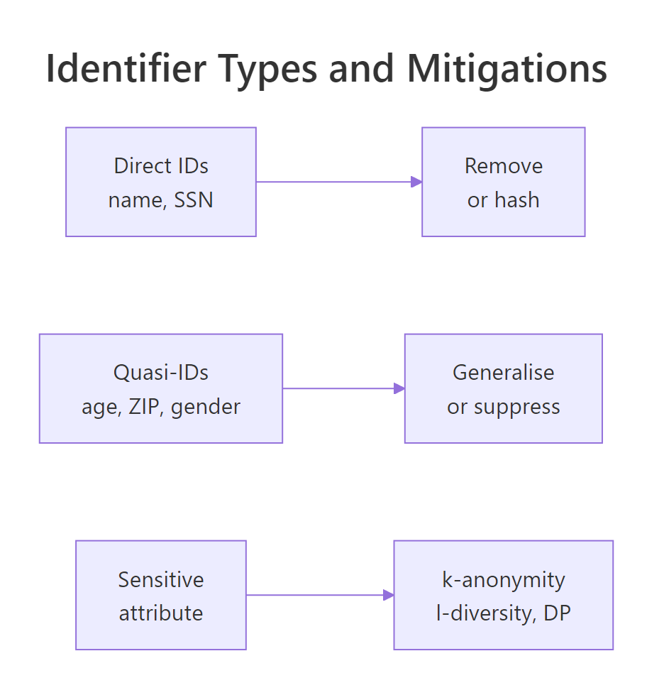
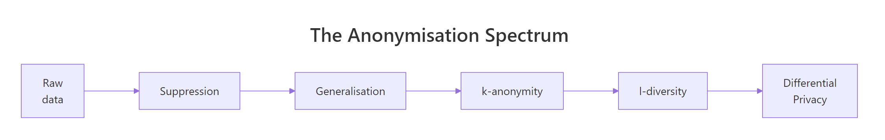
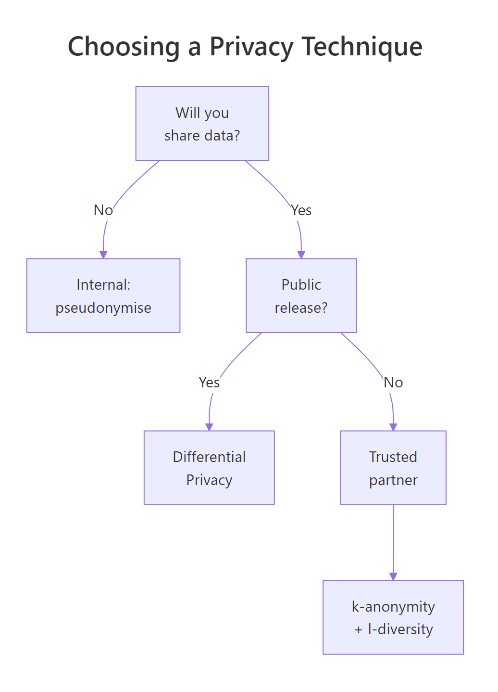

Data Privacy in R: Anonymise Datasets and Stay GDPR Compliant
Data privacy in R means transforming a dataset so individuals cannot be linked back to their records, while preserving enough signal to do useful analysis. This guide walks through suppression, generalisation, k-anonymity, l-diversity, and differential privacy in plain R, then maps each technique to the practical GDPR obligations every data scientist should know.
How easy is it to re-identify someone in a "de-identified" dataset?
Most "anonymised" datasets aren't. Latanya Sweeney's classic 1997 study showed that 87% of the US population can be uniquely identified by ZIP code, gender, and date of birth alone. Before learning defences, you need to feel how easy the attack is. Let's build a tiny patient table, drop the obvious identifiers, and count how many rows are still uniquely identifiable from quasi-identifiers alone.
Every one of the 10 rows is uniquely identifiable from age + gender + zip alone. The attacker doesn't need the names back, they just need a second dataset (a voter roll, a LinkedIn profile, an insurance claim) that shares those three fields. The "de-identified" file is effectively the original dataset with extra steps.
To see which column is doing the most damage, drop the most specific one and re-check.
Even without ZIP, age and gender together leave most rows unique. That tells you which fields need the heaviest treatment in the rest of the article: the more granular a quasi-identifier is, the more it leaks.
Try it: Use dplyr::distinct() to count distinct combinations of age, gender, and zip in deidentified, confirm the same answer using a different verb.
Click to reveal solution
Explanation: distinct() returns one row per unique combination of the listed columns; nrow() counts them. Same answer, cleaner pipeline.
What are direct identifiers, quasi-identifiers, and sensitive attributes?
You can't pick a privacy technique until you know what kind of column you're protecting. Privacy practice splits dataset columns into four buckets, and each bucket gets a different treatment.

Figure 1: Identifier categories and the mitigation each one needs.
| Category | Examples | Risk | Treatment |
|---|---|---|---|
| Direct identifier | name, SSN, email, phone | Very high | Remove or hash |
| Quasi-identifier | age, ZIP, gender, job title | High in combination | Generalise or suppress |
| Sensitive attribute | diagnosis, salary, religion | High when leaked | Protect with k-anonymity, l-diversity, or differential privacy |
| Non-sensitive | purchase count, click count | Low | Usually keep as-is |
A small classifier function makes the categorisation explicit and reusable across pipelines.
Two columns are direct identifiers (id, name), three are quasi-identifiers (age, gender, zip), and one is sensitive (diagnosis). Treating sequential row IDs as direct identifiers is deliberate, they uniquely pin a row even though they look like harmless integers.
Try it: Extend classify_col() so any column matching "birth" or "dob" is flagged as direct rather than quasi. Date of birth is too specific to be a quasi-identifier, it's a near-unique fingerprint.
Click to reveal solution
Explanation: Dates of birth are usually unique within a small ZIP-and-gender slice, so privacy frameworks like HIPAA Safe Harbor and GDPR Article 4 treat them as direct identifiers despite looking like demographic data.
How do you suppress and generalise data in R?
Suppression and generalisation are the workhorses of anonymisation, every more advanced technique builds on them. Suppression means removing values entirely; generalisation means replacing a precise value with a less precise one. An age of 34 becomes the band "30-39"; a five-digit ZIP becomes its three-digit prefix.

Figure 2: The anonymisation spectrum, from raw data to differential privacy.
The pipeline below drops the direct identifier name, buckets age into 5 bands with cut(), and truncates zip to its first three digits. Both transformations preserve population-level signal, average age by region is still meaningful, while making any single row much harder to single out.
age collapses from 10 distinct values to 5 bands; zip collapses from 2 distinct codes to 1 prefix. The data is now blurrier, a 34-year-old becomes "30-39", and the exact ZIP becomes "the 941 area". You've traded precision for privacy, and the trade is usually worth it for any dataset leaving your team.
The id column is still in there as a direct identifier. Replace it with a deterministic random token kept in a separate lookup table that the data controller stores under access control.
pseudo_id lets you join records (for example, two visits by the same patient) without exposing the original id. The mapping is stored separately, so an attacker who steals the released file alone cannot re-link. This is what GDPR Article 4(5) calls "pseudonymisation", it's not full anonymisation, since the controller can still re-link, but it is a hard legal upgrade compared to releasing raw IDs.
sdcMicro package for statistical disclosure control and the diffpriv package for differential privacy. They're not pre-compiled for the in-browser R that runs this page, so the examples here use base R + dplyr. Every method shown maps onto an sdcMicro function, sdcMicro::globalRecode() for cut() generalisation, sdcMicro::kAnon() for the next section's k-anonymity computation, once you install the package locally.Try it: Generalise patients further, bucket age into just "<50" and "50+", and shrink zip to its first two digits.
Click to reveal solution
Explanation: Coarser bands raise the privacy floor by collapsing distinct values into fewer groups, the price is less analytical detail downstream.
How do k-anonymity and l-diversity measure anonymity in R?
Generalising is fine, but how do you know when you've generalised enough? That's what k-anonymity quantifies. A dataset is k-anonymous if every combination of quasi-identifier values appears in at least k rows, so any individual is indistinguishable from at least k − 1 others.
Formally, k is the size of the smallest equivalence group:
$$\text{k}(D) = \min_{g \in G(D)} |g|$$
Where $D$ is the dataset, $G(D)$ is the set of groups formed by all distinct quasi-identifier value combinations, and $|g|$ is the size of group $g$.
In code that's a single count() followed by min().
A k-value of 1 means every quasi-id combination is unique, no protection at all. Most practitioners aim for k ≥ 5 as the industry minimum, and k ≥ 10 for sensitive data. To raise k you generalise further: drop a column, widen the bands, or suppress outlier rows that fall in singleton groups.
But k-anonymity has a famous failure mode. Imagine a k=4 group where every patient happens to share the same diagnosis, an attacker who knows their target falls in that group has learned the diagnosis without ever picking the exact row. This is the homogeneity attack, and the fix is l-diversity: each k-anonymous group must contain at least l distinct values of the sensitive attribute.
$$\text{l}(D) = \min_{g \in G(D)} |\{s : s \in g\}|$$
Where $|\{s : s \in g\}|$ is the count of distinct sensitive values inside group $g$.
The output 1 -diverse confirms that at least one group has only one distinct diagnosis, the homogeneity attack would succeed against this release. To raise l you usually have to generalise more (which merges groups) or suppress the offending rows. The price is the same as for k-anonymity: less granular data in exchange for stronger guarantees.
Try it: Compute k-anonymity using only age_band and gender (drop zip3 from the quasi-identifier set). Does k go up or down?
Click to reveal solution
Explanation: Fewer quasi-identifiers usually mean larger groups and a higher k. With this tiny 10-row dataset some bands still have only one row, but on a real dataset of thousands you would see k jump from 1 into the dozens just by removing one quasi-id.
How does differential privacy add mathematical guarantees in R?
k-anonymity and l-diversity are syntactic, they describe properties of the released table. Differential privacy is semantic: it bounds how much any single individual can change the answer to a query. Add or remove one row, and the released answer should look almost the same to any observer.
The standard recipe is the Laplace mechanism: add noise drawn from a Laplace distribution with scale $\Delta f / \varepsilon$, where $\Delta f$ is the sensitivity of the query (the most one record can change it) and $\varepsilon$ is the privacy budget. Smaller $\varepsilon$ means more noise, which means more privacy.
$$\tilde{f}(D) = f(D) + \text{Laplace}\!\left(\frac{\Delta f}{\varepsilon}\right)$$
For a count query, sensitivity is exactly 1, adding or removing one row changes the count by 1.
The released number is 5.81 instead of the true 5. An attacker who sees only the noisy answer cannot tell whether the true count was 4, 5, or 6, the noise hides one person's contribution. Round to the nearest integer for a publishable count.
How does the noise scale with epsilon? Sweep a grid of values and measure the standard deviation of the noise distribution.
At $\varepsilon = 0.1$ the noise standard deviation is ~14, far larger than the true count, so the answer is useless. At $\varepsilon = 5$ it drops to 0.28, the answer is accurate but the privacy guarantee is weak. Practical releases typically pick $\varepsilon$ between 0.5 and 2, with smaller values reserved for highly sensitive aggregates like medical counts.
Try it: Modify the call to use $\varepsilon = 2.0$ and explain in one sentence why the noise standard deviation should fall.
Click to reveal solution
Explanation: The Laplace scale is $\Delta f / \varepsilon = 1/2 = 0.5$, and a Laplace distribution's standard deviation is $\sqrt{2} \cdot \text{scale} \approx 0.71$. Larger epsilon shrinks the scale, which shrinks the noise.
What does GDPR actually require from data scientists?
GDPR is a 99-article regulation, but the parts you touch as a working data scientist boil down to seven concrete habits. The table maps each habit to the article that demands it and the R-side action you take.
| GDPR habit | Article | What you do in R |
|---|---|---|
| Lawful basis | Art. 6 | Document why you can process this data, store with the dataset metadata |
| Data minimisation | Art. 5(1)(c) | Drop columns you don't need before joining |
| Pseudonymisation | Art. 4(5), 32 | Replace direct IDs with random tokens; keep the map separately |
| Right to erasure | Art. 17 | Build a delete_subject(df, subject_id) helper into your pipeline |
| DPIA threshold | Art. 35 | Assess high-risk processing before it starts |
| Breach notification | Art. 33 | Log every dataset access; 72-hour reporting window |
| Documentation | Art. 30 | Keep a Record of Processing Activities (RoPA) |
The simplest piece of audit code you can write is a column-name scanner that warns when an obviously identifying field has slipped through.
Run this as a unit test in your data pipeline, if it ever returns a WARN, the build fails. That's a five-line gate that prevents the most common GDPR incident: shipping a "cleaned" file that still has a name column. The pattern is intentionally loose because false positives are cheaper than a regulator letter.
needs_dpia(df)) and call it before any model fits, so a forgotten DPIA fails the pipeline rather than slipping through review.Try it: Extend gdpr_audit() to also flag any column matching "passport" or "licence", and return a vector of all flagged columns rather than a single string.
Click to reveal solution
Explanation: Returning a character vector instead of a message makes the audit composable, you can pipe it into length() > 0 for boolean tests inside continuous-integration scripts.
Practice Exercises
These capstone exercises combine techniques from across the article. Use the patients data frame already loaded in the previous blocks.
Exercise 1: Build a one-call anonymise pipeline
Write anonymise_pipeline(df, quasi_cols, sensitive_col) that drops direct identifiers (anything matching the audit pattern from the GDPR section), generalises the quasi-identifier columns, and returns a list with the generalised data frame, its k-anonymity, and its l-diversity. Test it on patients with quasi_cols = c("age","zip") and sensitive_col = "diagnosis".
Click to reveal solution
Explanation: The function strips identifying columns by regex, generalises only the quasi-identifiers requested, then uses dplyr's tidy-eval helpers (across(all_of(...)), .data[[col]]) to compute both metrics from arbitrary column names.
Exercise 2: Track a privacy budget across queries
Build budget_tracker(queries, total_budget) where queries is a data frame with columns query (character) and epsilon (numeric). Return the same data frame with two new columns: cumulative_eps (the running total) and status that flips to "OVER BUDGET" once the running total exceeds total_budget.
Click to reveal solution
Explanation: cumsum() gives the running epsilon spent; the ifelse() flags the moment the budget is breached. Wire this into your release pipeline so a query that pushes the budget over the cap is automatically refused.
Complete Example
Here is the full release pipeline on the original patients dataset: drop identifiers, generalise quasi-IDs, measure k-anonymity, measure l-diversity, release a differentially private count of female patients, and audit the released frame.
The pipeline outputs a 2-anonymous, 2-diverse release frame and a noisy female count of 4 (true value 5). The gdpr_audit() line is the safety net, if any direct identifier had survived the pipeline, this print would fail loudly instead of silently shipping personal data downstream.
Summary

Figure 3: Choosing a privacy technique by sharing context.
The six techniques map cleanly to attacks, R verbs, and production analogues:
| Technique | Protects against | R verb | Production analogue |
|---|---|---|---|
| Suppression | Direct identification | select(-col) |
sdcMicro::removeDirectID() |
| Generalisation | Linkage attacks | cut(), substr() |
sdcMicro::globalRecode() |
| Pseudonymisation | Joinability of direct IDs | mutate() plus lookup table |
sdcMicro::createSdcObj() |
| k-anonymity | Singling out | count() plus min() |
sdcMicro::kAnon() |
| l-diversity | Homogeneity attack | n_distinct() per group |
sdcMicro::ldiversity() |
| Differential privacy | Inference from queries | Laplace noise on aggregates | diffpriv::DPMechLaplace() |
Pick the lightest technique that meets your threat model. Internal-only datasets can usually rest on pseudonymisation plus generalisation. Releases to a trusted partner need k-anonymity and l-diversity on top. Public releases, anything an attacker could combine with arbitrary auxiliary data, need differential privacy.
References
- Sweeney, L. (2002). k-anonymity: A Model for Protecting Privacy. International Journal on Uncertainty, Fuzziness and Knowledge-Based Systems. Link
- Machanavajjhala, A., Kifer, D., Gehrke, J., & Venkitasubramaniam, M. (2007). l-diversity: Privacy beyond k-anonymity. ACM Transactions on Knowledge Discovery from Data. Link
- Dwork, C. & Roth, A. (2014). The Algorithmic Foundations of Differential Privacy. Foundations and Trends in Theoretical Computer Science. Link
- Templ, M., Meindl, B., & Kowarik, A.,
sdcMicropackage documentation. Link - Rubinstein, B.,
diffpriv: Easy Differential Privacy in R (vignette). Link - EU GDPR, full regulation text (Articles 4, 5, 25, 32, 35). Link
- Utrecht University, Data Privacy Handbook: k-anonymity, l-diversity, t-closeness chapter. Link
- SDC Practice Guide, Statistical Disclosure Control with sdcMicro. Link
Continue Learning
- R Project Structure, organise privacy-sensitive datasets outside the project tree so they never end up in version control. Link
- Reproducible Research in R, once data is privacy-safe, lock the analysis with reproducible workflows. Link
- R for Excel Users, the same anonymisation patterns map directly to dplyr verbs for analysts moving from Excel. Link